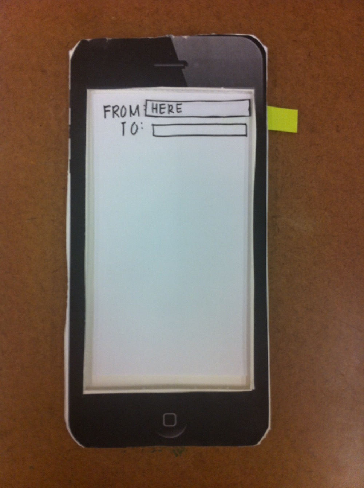
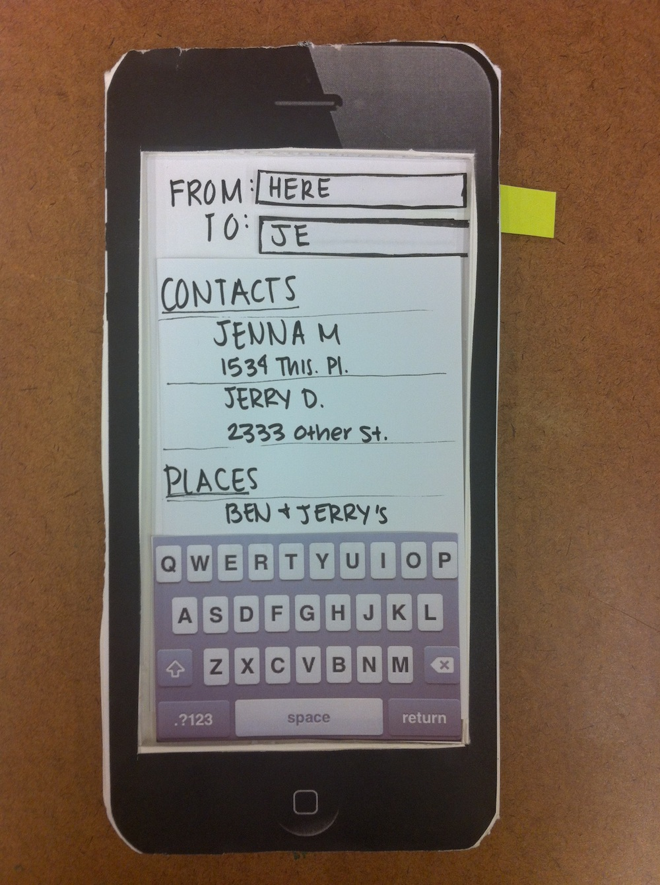
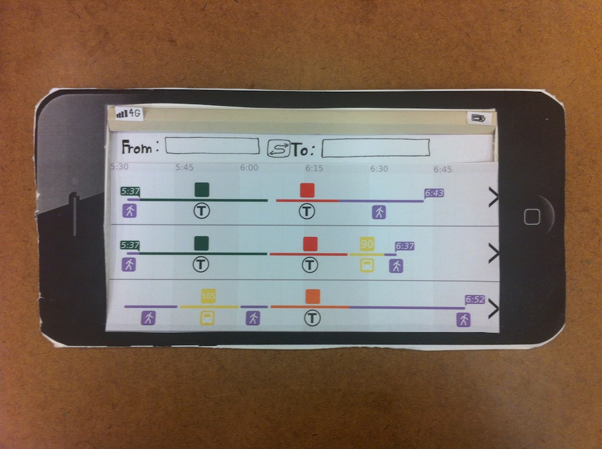
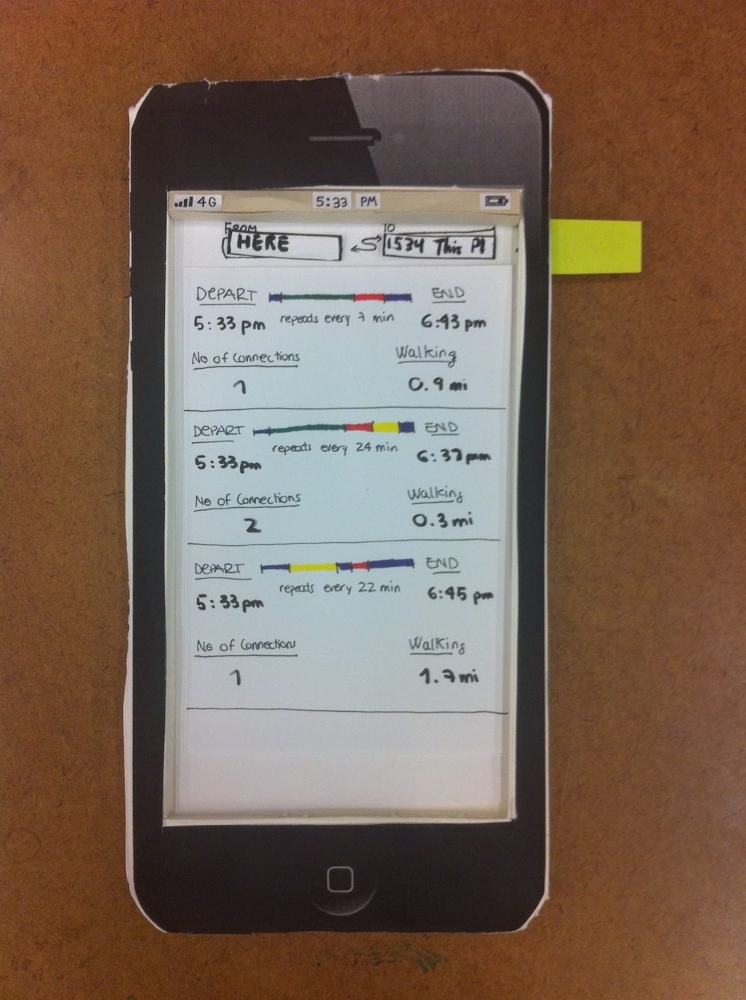
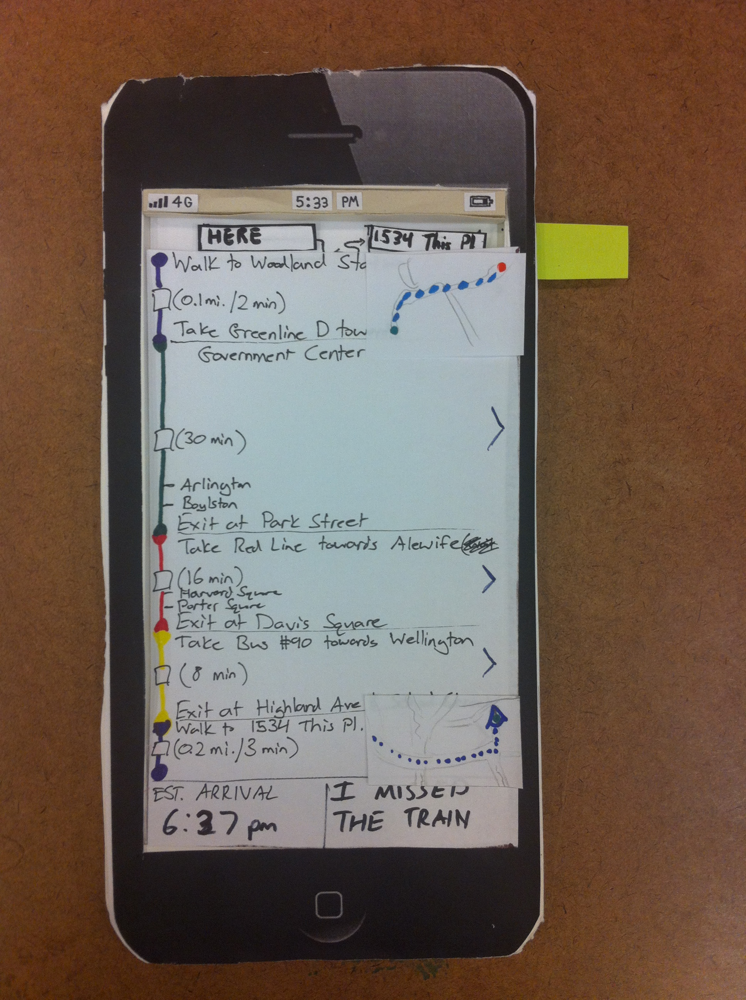
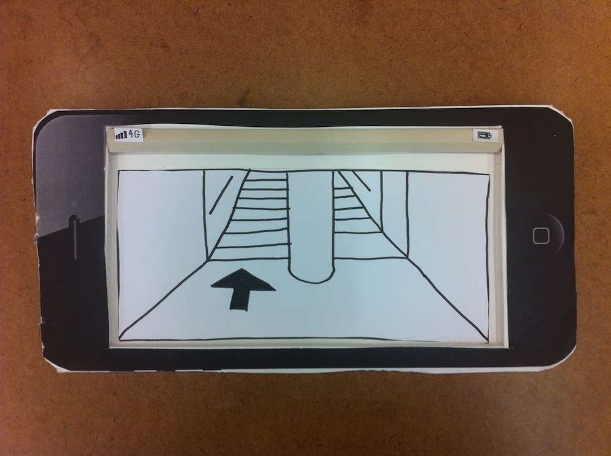

Design Development Phase
At the beginning of this phase, we took our user research, task analysis, and design ideas and used them to create a low-fidelity prototype of a possible application that could be used by our users to better navigate the MBTA public transit system. We encourage you to look over those items again if you have not already, as our usability report is worded on the assumption you are familiar with our work thus far.
Usability Test Plan
In order to test our low-fidelity prototype, we will send follow-up emails to the users we met and interviewed in Boston during the research phase. We hope that some of them will be willing and able test with us further - coming to Olin’s campus would be optimal, but we may be able to meet them elsewhere. We will ask them to a complete 1-2 scenarios based on our task analysis and our personas in order to explore the various elements of our design.
If we cannot reach our contacts or they are unwilling to participate, we will reach out to members of the Babson College Community. If this outreach fails, we will then test with members of the Olin community.
Round 1 Images

Screen 1

Screen 1 after the user begins typing

Screen 2 Horizontal/Graphical

Screen 2 Vertical/Text

Screen 3: Step-by-step directions

Screen 4: Station view